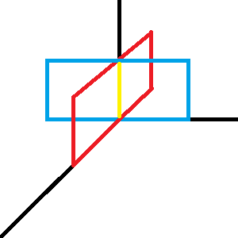
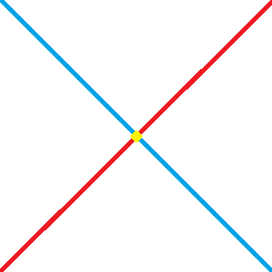
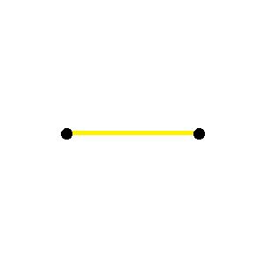
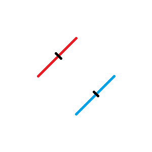
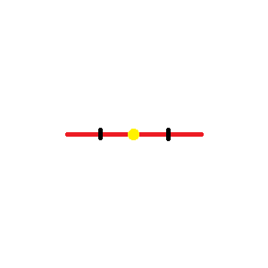
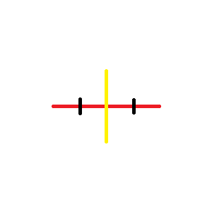
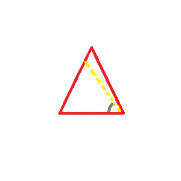
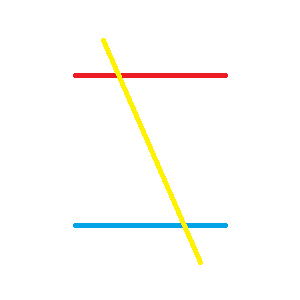

General Definitions
- Ahmes
- Wrote 'Manuscript of Geometry' 1550
- Geometry
- Earth Science
- Study that deals with the properties, measurements, and construction of flat and solid figures
- Euclid
- Wrote 'Elements' in 300 BC
- Line
- Intersection of two flat surfaces
- 
- Point
- Intersection of two straight lines
- 
- Geometric figure
- Shape
- Geometric magnitude
- size
- Constant
- Quantity that remains the same throughout the problem
- Line segment
- Limited portion of a line
- 
- Equal segments
- Line segments whose end points can be made to coincide
- 
- Mid point
- A point that divides a line into two equal segments
- 
- Bisector
- A line that divides a line into two equal segments
- 
- Congruence / Congruent
- Figures with same size and shape
- May be made to coincide throughout
- Axiom
- General statement accepted without proof to be true
- Postulate
- Geometric assumption accepted without proof to be true
- Proof
- Process of resoning whereby truth of a theorem or correctness of a construction is established
- Correllary
- A geometric statement that is easily deduced from the theorem just proven
- Auxiliary Line
- An imaginary line with only one assumed angle?
- 
- Converse statement
- A statement formed from another statement by interchanging its hypothesis and conclusion
- Transversal
- A line that intersects 2 or more other lines
- 
- Locus (Loci plural)
- Location of all points and only those points to satisfy the condition
- Distance postulates? (may be examples of Loci)
- Shortest distance between two points [is a straight line]
- Distance between a point and a line [is the shortest line from the point to any point on the line]
- Shortest distance between two parallel lines [can really be any perpendicular line between the two]
Circle Definitions
- Circle
- A closed curve all of whose points are equally distant (equidistant) from a fixed point
called the center
- Circumference (c)
- The perimeter of a circle
- Semicircumference
- Half of the circumference
- Diameter (d)
- A line segment through the center whose end points
are on the circle
- Radius (r)
- A line segment joining the center with any point
on the circle
- Chord / Secant
- A straight line whose ends are on the circle
- Arc (s)
- A limited portion of a circle
- Equal arcs in the same circle or equivalent circle's can be made to coincide
- Semicircle
- An arc which represents half of a circle
- Quadrant
- An arc which represents a quarter of a circle
- Segment
- Region of a circle that has been cut by a chord
- Concentric
- Two circles having the same center
- Minor Arc
- An arc that is smaller than the semicircle
- Major Arc
- An arc that is greater than the semicircle
- Central Angle
- An angle in a circle that is formed by two radii
- Measured by it's intercepted arc
- Inscribed Polygon
- A polygon whose vertices fall on a circle
- Tangent
- A line that has one and only one point touching a circle
- Chord of Tangency
- A chord whose end points are on the points of tangency
- Common Tangent
- A tangent that is tangent to two different circles
- Common Internal Tangent
- [A common tangent but the two circles are on opposite sides of the tangent]
- Common External Tangent
- [A common tangent but the two circles are on the same side of the tangent]
- Length of Common Tangent?
- Equals segments between two tangency?
- Lines of Center
- Line that passes through two centers of circles
- Common Chord
- A chord that is a chord for two circles